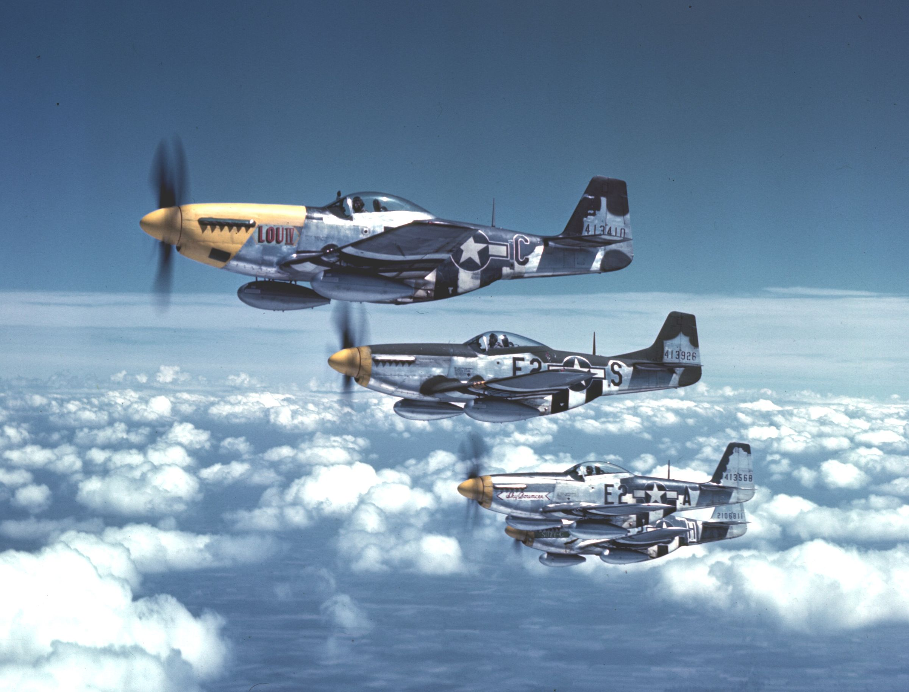
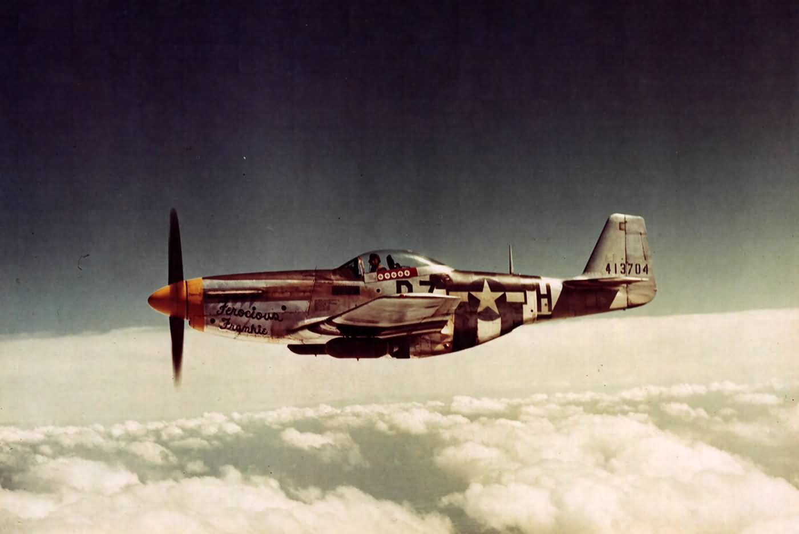
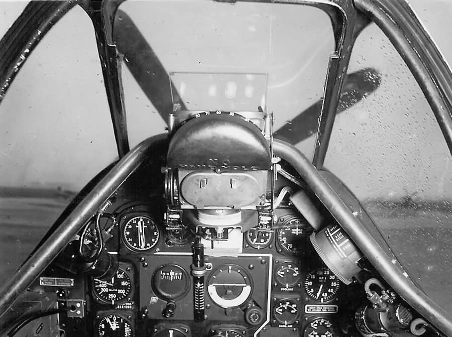
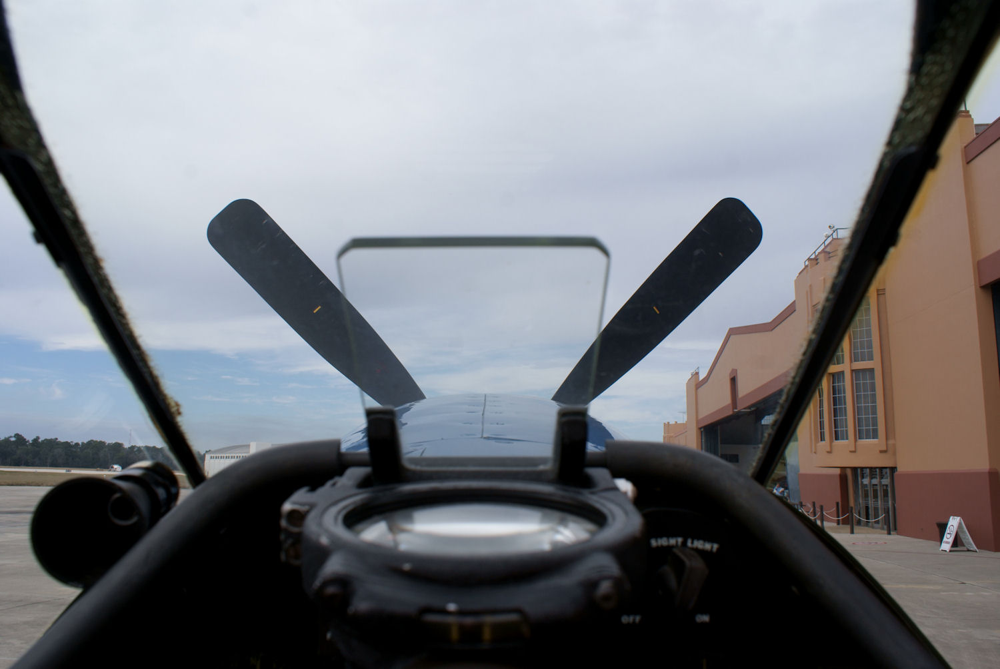

North American P-51 Mustang, 1940–1945
In 1944 the P-51 escorted American bombers all the way to Berlin and back. Take it apart, climb into the cockpit, and meet the aircraft it flew with and against.
P-51Ds of the 361st Fighter Group over England, 1944
What made it fast and far-reaching
The Mustang wasn’t the most powerful fighter of the war. It won by being clean, efficient and able to carry a lot of fuel. Select a part of “Ferocious Frankie” to see how it worked.

Five years, six Mustangs
The P-51 changed more between 1940 and 1945 than almost any other fighter. Step through its development.
Start it. Fly it. Aim it.
A working P-51D instrument panel. Run the start-up, open the throttle and climb. Watch the supercharger shift into high gear and see why indicated airspeed falls as the air thins. Look out over the nose at the English countryside, and try the K-14 gunsight on a practice target. Select any instrument to learn what a pilot used it for.
How the K-14 gunsight works
Hitting a moving aircraft means aiming where it will be, not where it is. The K-14’s gyroscope measured how fast you were turning and moved the reticle to show the right amount of lead. Before combat the pilot dialled in the enemy’s wingspan. In the fight, he twisted the throttle grip until the six diamonds just touched the target’s wingtips, which told the sight the range.
Here the wingspan is set for a Bf 109. Use the range buttons, the mouse wheel or the [ and ] keys until the wings fill the diamonds. Then hold Fire (or Space) with the centre pip on the target. In a hard turn, watch the reticle slide away from the centre cross: that offset is the lead.
Start-up
Flip the three switches, then press and hold the starter.
Drag down (or press ↓) to pull back and climb. W and S move the throttle.
Select an instrument
Every gauge on this panel is clickable. Start with the manifold pressure gauge: it was the Mustang pilot’s most important engine instrument.

Inside the Mustang
- Left wall
- Throttle with the gun and camera triggers, propeller and mixture levers, and the trim wheels.
- Behind the seat
- An 85-gallon fuel tank and a slab of armor plate. Pilots burned the tank down before combat because a full one made the aircraft unstable.
- Floor
- Fuel selector for the two wing tanks, the fuselage tank and drop tanks. Running a tank dry over Germany was a common way to lose an engine.
- Overhead
- The bubble canopy slides back on rails, and it could be jettisoned with a red handle for bailing out.

How far could the escorts go?
In 1943 unescorted American bombers suffered heavy losses over Germany: 60 B-17s went down on the second Schweinfurt raid alone. The fix was a fighter that could stay with them the whole way. Compare how far each fighter could escort from East Anglia.
Approximate combat radius in miles, including time to fight. Real figures depended on altitude, weather and how long the formation had to loiter.
The hangar
Ten aircraft that shaped the air war, from both sides. Filter by nation, role or year, then open one to see its cockpit, what it did well and where it fell short.
No aircraft match those filters.
Head to head
Pick any two aircraft. Longer bars mean more speed, range, altitude, climb or guns.